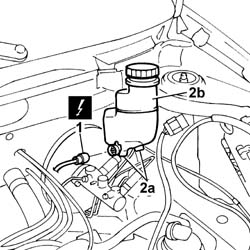

3330C30 brake fluid reservoir - r + r and wash inside
- Path
- Procedures > 33 BRAKING SYSTEM > 3330 HYDRAULIC BRAKING SYSTEM > 3330C brake pump, reservoir and load proportioning valve > 3330C30 brake fluid reservoir - r + r and wash inside
- Kind
- repair procedure (removal / refitting; the operation number is the code)
- Applies to
- all engines; all production periods
- Interactive page
- https://sloeber94.github.io/elrnDB-fPnd/en/#/2752732
Applies to: all engines; all production periods
 Removing
Removing
 Refitting
RefittingPlace the car on a ramp.
Remove the protective cap on the brake caliper bleed valve.
Connect the collection system (pipe and reservoir) to the bleed valve on the brake caliper.
Operate the brake pedal until the brake fluid reservoir is empty.
Undo the brake fluid reservoir cap.
1. Disconnect the electrical connection from the brake fluid sensor (switch).
 | Name | Connector |
|---|---|---|
1 | Brake fluid level sensor (switch) | K25 |
2. Undo both fasteners (2a) by releasing from the pin on the brake pump, then remove the brake fluid reservoir (2b).

Applies to: all engines; all production periods
Refitting
RemovingClean the brake fluid reservoir thoroughly.
Secure the brake fluid reservoir to the brake pump and secure both retainers to the pin on the pump.
Tighten the cap on the brake fluid reservoir.
Connect the electrical connection to the brake fluid sensor (switch).
| Name | Connector |
|---|---|---|
- | Brake fluid level sensor (switch) | K25 |
0010T64 brake and or clutch fluid check level and top up as necessary
Topics linked from this page (2)
- 0010T64 brake and or clutch fluid check level and top up as necessary
- 0010T65 hydraulic brake system bleed air
Topics that link to this page (6)
- 3330C10 (PUMP) - MASTER CYLINDER R.R.
- 3330C34 brake fluid reservoir - r + r and wash inside - versions with r/h drive and abs
- 3330D02 brake servo/brake pump assembly - r r
- 3330D10 brake servo - r+r - includes separation from master cylinder (pump)
- 3330E52 RIGID PIPE from master cylinder to LEFT front brake - R.R.
- 3330E53 RIGID PIPE from master cylinder to RIGHT front brake - R.R.